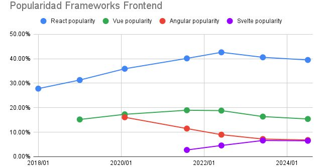

8 El paradigma de Svelte: menos código, más rendimiento
Palabras clave: Framework, Frontend, Svelte, Rendimiento, Web, JavaScript.
8.1 Introducción
Actualmente, las aplicaciones son cada vez más pesadas, teniendo una mayor complejidad de código y necesidad de mejorar la experiencia de usuario. Es por ello que, en los últimos años, Svelte, un nuevo framework frontend de JavaScript, salió a la luz ganando terreno con su paradigma de compilador que genera JavaScript puro de una forma altamente optimizada, planteando una filosofía distinta: menos código, más rendimiento.
Grandes empresas como Apple Music, Spotify y The New York Times ya utilizan Svelte en sus proyectos para mejorar la experiencia de usuario y optimizar el rendimiento. A pesar de que React siga siendo el preferido en el mercado laboral, Svelte ha comenzado a destacarse por su simplicidad, menor consumo de recursos, tiempos de carga más rápidos, código final mucho más ligero y una documentación superior, reduciendo así la curva de aprendizaje.
8.2 Artículo
¿Qué hace diferente a Svelte?
Según Mozilla (2025) la principal diferencia de Svelte frente a React o Vue es su compilador, el cual devuelve HTML, CSS y JavaScript puro optimizado durante el tiempo de construcción, eliminando la necesidad de interpretar código en tiempo de ejecución. El resultado final es código JavaScript que interactúa directamente con el DOM. Esto se traduce en un menor consumo de recursos y tiempos de carga más rápidos.
Otra de las diferencias de Svelte radica en la ausencia de un DOM virtual, lo que le permite ahorrar una sobrecarga significativa de trabajo, ya que el código de JavaScript generado interactúa directamente con el DOM real. Esto lo diferencia de frameworks como React, que utilizan un DOM virtual que luego es traducido a un DOM real (Mozilla 2025).
Asimismo, la arquitectura de Svelte ofrece ventajas significativas, como una reducción sustancial en la cantidad de líneas de código, entre un 30% y un 40% menos en comparación con React, lo que favorece una mejor legibilidad gracias a una sintaxis similar a HTML, CSS y JavaScript puro, disminuyendo así su curva de aprendizaje (Bhushan 2025).
Una nueva forma de pensar el rendimiento Se han realizado varios estudios que demuestran que Svelte representa una nueva forma de pensar el rendimiento al ofrecer grandes ventajas en velocidad, optimización y eficiencia. Uno de los estudios más recientes es el de Putra et al. (2025) quienes demostraron que Svelte logra tiempos de renderizado un 35% más rápidos que React, tamaños de bundle más reducidos y un uso de memoria más eficiente, superando a React y Vue en todas las métricas evaluadas.
Asimismo, otra de las investigaciones sobre la manipulación del DOM y el consumo de memoria en Svelte fue realizada por Dékány (2025) en la Universidad de Masaryk, concluyendo que existe una reducción significativa de la latencia en la interacción y una mejora de la escalabilidad en entornos de alta demanda al usar JavaScript nativo optimizado. Esto marca un cambio de paradigma respecto a los frameworks tradicionales.
Menos código: simplicidad y reactividad Según Bhushan (2025) una de las mayores virtudes de Svelte radica en su capacidad para lograr una sintaxis clara y concisa, lo que se traduce directamente en un menor uso de código al momento de implementar funcionalidades en comparación con otros frameworks. Asimismo, Svelte elimina casi por completo la necesidad de importaciones de hooks, gestionando la reactividad mediante JavaScript estándar. Es “JavaScript con superpoderes”.
Adopción en la industria Svelte ha experimentado un crecimiento significativo en adopción empresarial desde su versión 3 en 2019. Actualmente cuenta con más de 60,000 estrellas en su repositorio de GitHub, lo que refleja una gran lealtad y satisfacción por parte de los desarrolladores que lo utilizan. A continuación, se presenta una gráfica de popularidad de Svelte en los últimos años.

Figura 8.1: Popularidad Frameworks Frontend. En Github.
La gráfica de popularidad de frameworks frontend muestra el dominio sostenido de React, aunque con una leve caída desde su pico en 2020/2021; Angular y Vue también presentan descensos, mientras que Svelte destaca como el de mayor crecimiento desde 2020. No obstante, al ser un framework relativamente nuevo, su ecosistema aún es reducido en comparación con sus competidores, lo que se traduce en una menor demanda laboral y mercado más reducido.
8.3 Conclusiones
Svelte se presenta como un paradigma innovador en el desarrollo frontend al combinar simplicidad y rendimiento mediante un modelo de compilación que produce código nativo optimizado, con claras ventajas frente a frameworks como React. Las investigaciones señalan mejoras en tiempos de renderizado, eficiencia en el uso de memoria y escalabilidad, lo que lo convierte en una opción atractiva para proyectos que requieren rapidez y estabilidad. Su sintaxis clara y la reducción de líneas de código facilitan la legibilidad y el proceso de aprendizaje de los desarrolladores. No obstante, la demanda laboral de Svelte aún es reducida en comparación con la de sus competidores, existiendo la necesidad de fortalecer su comunidad de desarrollo. Finalmente, queda abierta la discusión sobre si este enfoque logrará consolidarse como un estándar predominante en la industria tecnológica global en los próximos años.
8.4 Referencias
[1] Bhushan, Ashirvad. “Svelte vs. React: características, rendimiento y más.” Kinsta, Enero,2025 . Accedido el 17 de agosto de 2025.
https://kinsta.com/.[2] Dékány, Martin. “Comparative Analysis of React, Vue.js, and Svelte.” tesis de licenciatura,Universidad de Masaryk,2025. (tesis de licenciatura, Universidad de Masaryk, 2025), 45. https://is.muni.cz
[3] Mozilla.“Introducción a Svelte - Aprende desarrollo web.” MDN Web Docs, 2025. Accedido 13 de agosto de 2025.
https://www.developer.mozilla.org[4] Putra, Fauzan Prasetyo Eka, Hasbullah, Farhan Muslim, y Reni Paradina.“Technical Performance Comparison of Modern Frontend Frameworks - Study on Svelte, React, and Vue.”, 2025. Brilliance: Research of Artificial Intelligence 5, no. 1: 355–364. DOI: 10.47709/brilliance.v5i1.6133.
[5] Krotoff,Tanguy.“Popularidad de frameworks frontend.”,GitHub Gist,Marzo, 2025. Accedido 12 de agosto de 2025. https://gist.github.com